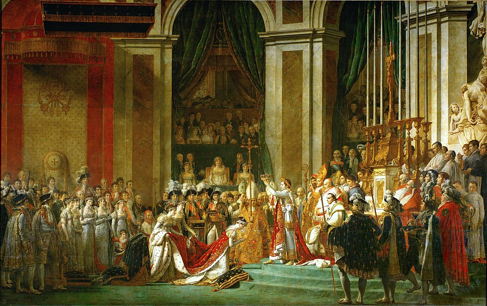

Napoleón toma la corona del altar y se la ciñe él mismo: Francia tiene emperador
Ante el papa Pío VII, venido de Roma para ungirlo, el general que gobernaba la República como primer cónsul se coronó con sus propias manos y coronó después a la emperatriz Josefina. La revolución que derribó un trono termina fabricando otro.

En una mañana helada, ante miles de invitados que llevaban horas tiritando bajo las bóvedas de Notre Dame, Napoleón Bonaparte fue consagrado hoy emperador de los franceses. El momento que todos contarán llegó tras la unción: el emperador subió al altar, tomó la corona de laureles de oro y, dando la espalda a siglos de ceremonial, se la puso él mismo sobre la cabeza. Coronó luego a la emperatriz Josefina, arrodillada ante él con las manos juntas, y hubo quien vio correr lágrimas bajo la diadema. El papa Pío VII, traído de Roma para el oficio, bendijo lo que no le dejaron terminar, y los cañones anunciaron a París que la ceremonia estaba consumada.
El camino hasta ese altar se recorrió a paso de carga. Hace diez años, Bonaparte era un oficial de artillería corso, oscuro y sin fortuna; lo hicieron general las guerras de la Revolución, célebre las campañas de Italia y de Egipto, y amo de Francia el golpe de Estado de brumario, hace apenas cinco años, que barrió al Directorio y lo sentó como primer cónsul. Vino luego el Consulado vitalicio, y este año un senadoconsulto y un plebiscito con millones de síes lo elevaron a emperador hereditario. Cada escalón se subió con las formas de la ley y con el peso de los cañones, que en esta ciudad nadie ha olvidado cómo se abren las puertas.
Quince años y unos meses han pasado desde aquella jornada de julio en que el pueblo de París tomó la Bastilla, de la que este diario dio cuenta; los que aquel día derribaban un símbolo difícilmente imaginaran que la Revolución terminaría encargando un trono nuevo, con abejas de oro bordadas en el manto donde hubo flores de lis. Los partidarios del emperador responden que justamente eso se corona hoy: no la sangre antigua, sino el mérito hecho persona y la igualdad ante la ley; que el Código que lleva su nombre asegura lo ganado desde el 89, y que Francia, cercada de reyes enemigos, necesita algo más duradero que un cónsul.
La jornada dejó cosecha para los memoriosos: el papa aguardó largamente en la catedral fría la llegada del cortejo; las hermanas del emperador cargaron de visible mal talante la cola del manto de Josefina; y el pintor David, apostado en una tribuna, tomaba apuntes del instante para un lienzo enorme que se le tiene encargado. Cuentan los cercanos que, en lo mejor de la ceremonia, el emperador se volvió hacia su hermano mayor y le habría murmurado: «¡José, si nuestro padre nos viera!». El padre, un abogado de Ajaccio muerto hace veinte años, nunca supo que engendraba una dinastía.
Europa entera leerá mañana los partes de esta ceremonia con la mano en la espada: Inglaterra ya está en guerra con Francia, y las cortes del continente ven en el ungido de hoy no a un igual, sino a un incendio con corona. El emperador, que no concibe el reposo, tiene un ejército acampado frente al Canal. Quede para los años venideros juzgar si lo consagrado hoy en Notre Dame fue el cierre de la Revolución o su conquista por un solo hombre; este diario apunta, por lo pronto, que las coronas que uno mismo se pone sólo las sostienen las victorias, y que las victorias, como los plebiscitos, no son eternas.